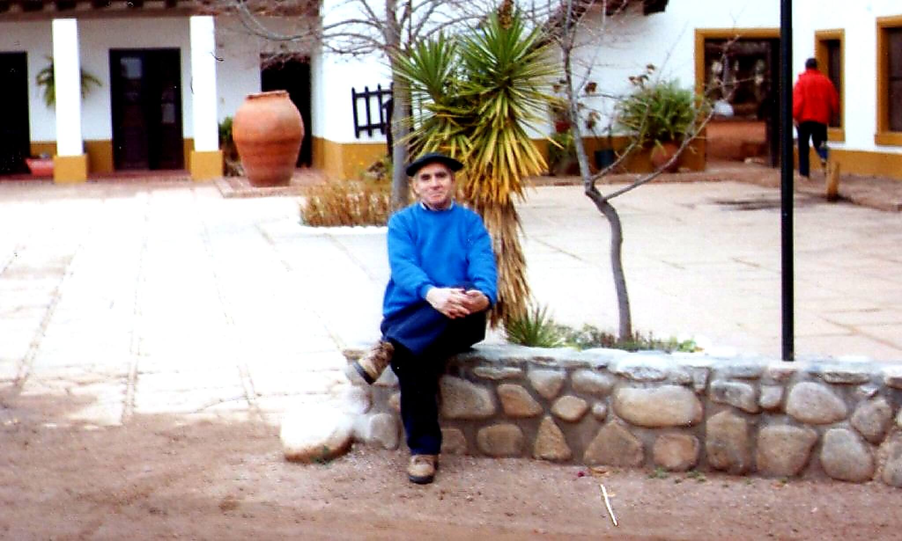

Víctor Hugo Vallejos
Santa Lucía, Corrientes — 3 de mayo de 1947
Trayectoria académica
Profesor y Licenciado en Geografía de la Universidad Nacional de La Plata. Se desempeñó como profesor en el Departamento de Geografía (FaHCE-UNLP) y en la Universidad Nacional de Río Cuarto (Facultad de Ciencias Humanas). Ha coordinado diversos proyectos de investigación en temas vinculados a estudios regionales, problemáticas ambientales, recursos naturales y transporte.
Se ha desempeñado durante varios años como profesor en Institutos de Formación Docente de la Provincia de Buenos Aires, dictado cursos de actualización docente, conferencias, charlas y seminarios. Se destacan numerosas publicaciones científicas, de divulgación y trabajos profesionales de consultoría sobre las temáticas antes mencionadas.
En agosto de 2015 su participación en el IV° Encuentro Provincial de Profesores de Geografía y 2° Congreso Nacional de la Junta de Geografía de la Provincia de Corrientes fue declarada de interés municipal por la ciudad de Corrientes y merecedor del premio a la Trayectoria Académica otorgado por la Junta de Geografía de Corrientes. Se retiró de la docencia en el 2017.
Vida cultural y musical
Nacido en Santa Lucía, provincia de Corrientes, de chico vive en La Plata. Hombre propenso a las manifestaciones culturales, especialmente a la música, integró varios conjuntos, entre ellos, el Grupo Vocal Clave Cuatro con quien hizo presentaciones en Francia, Uruguay y los más importantes escenarios de la Argentina.
Creó y dirige la Agrupación Coral "Purajhey Yoá", en el seno del Centro de Residentes Correntinos del Gran La Plata, cuyo repertorio es de expresiones musicales del litoral. También es conductor de programas radiales de corte cultural.
En el ámbito público se dedicó a la planificación del transporte y del tránsito como también a problemáticas ambientales en su vida profesional, publicando distintos trabajos científicos en esas temáticas.
Obra literaria
En la faz literaria publicó en 2008 el libro "Natural de Santa Lucía" que propone un recorrido por lugares, personajes y paisajes de su tierra natal. Además, en 2013 publicó "Agustina, una mujer correntina y otros relatos" y en 2016 "Ñande Yvera (nuestro Iberá). Encrucijada hacia un destino de enajenación de los esteros".